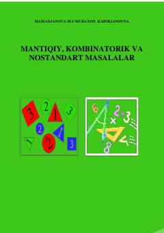

MKBoshlang'ich sinf o'quvchilari uchun mantiqiy va kombinatorik masalalar yechish bo'yicha o'quv qo'llanma.
Ushbu o'quv qo'llanma boshlang'ich sinf o'quvchilarining mantiqiy tafakkurini rivojlantirishga qaratilgan turli xil mantiqiy, kombinatorik va nostandart masalalarni o'z ichiga oladi. Kitobda masalalarni yechishning samarali usullari, jumladan, to'plam elementlarini tartiblash va modellashtirish kabi metodlar tushunarli tarzda bayon etilgan.